Venue owner
manual
Edition 1.0 / 6 November 2026
Open your courts for bookings, review a player’s payment, or check what your venue owes. Choose a chapter below to jump to its instructions.
Edition 1.0 / 6 November 2026
Open your courts for bookings, review a player’s payment, or check what your venue owes. Choose a chapter below to jump to its instructions.
Open the regular admin sign-in link for the venue. Use your existing email and password. A draft venue can show Staff sign in before it shows the Dashboard.
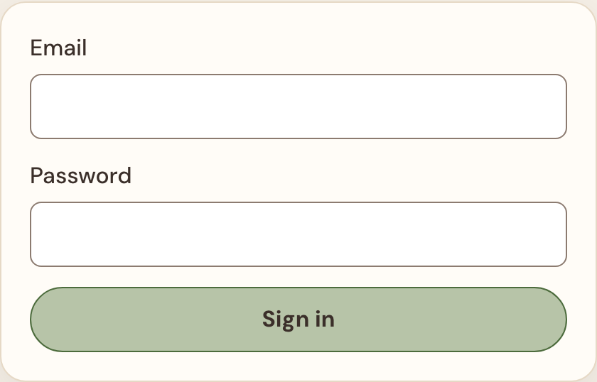
On a phone, use the menu at the top to open navigation. If you manage several venues, check the venue selector before changing anything.
On the draft venue’s Dashboard, select Fix beside an unfinished item. Return here after each save.
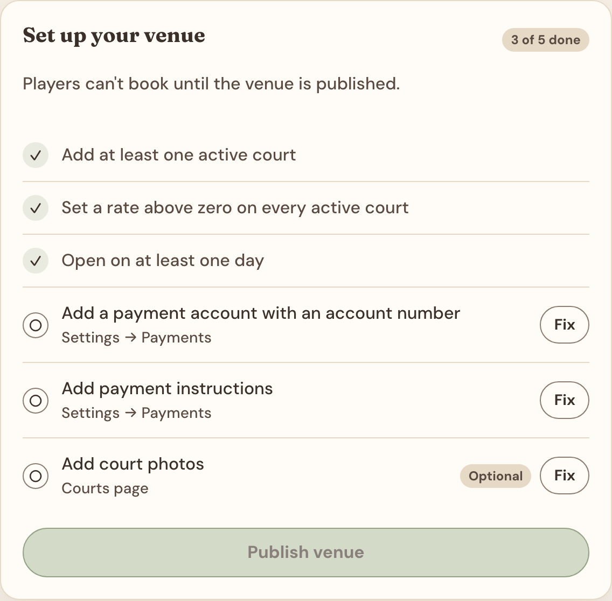
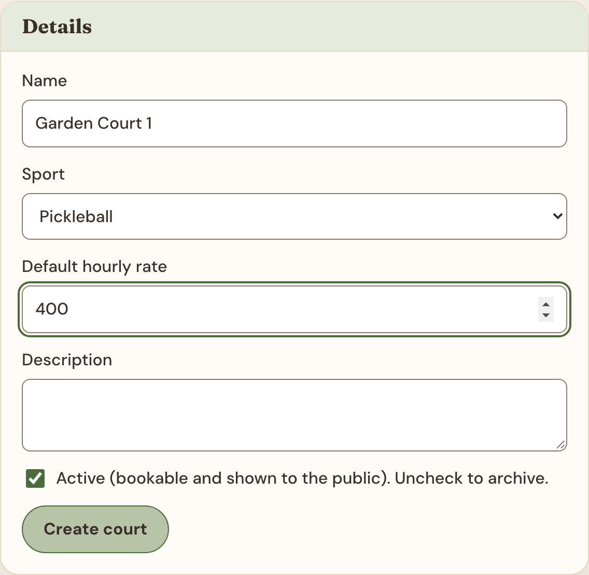
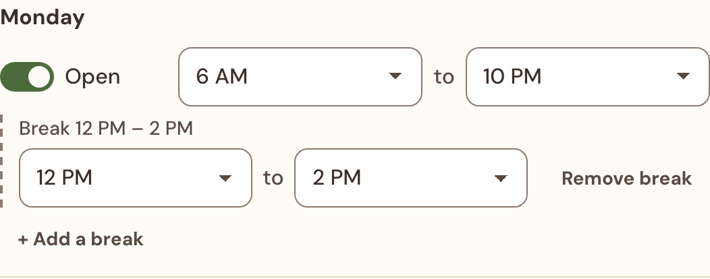
Under Courts with different hours, choose the court and select Give this court different hours. Check the “Editing … only” notice, then change its week. Back to all courts returns to the venue week.
To restore the venue week, choose Use opening hours for that court and confirm. Finish with Review & save as described on the next page.
In Prices, select the court, rate day, and start and end hours. Enter the hourly Override price and choose Apply rate. To restore the base price for a range, leave the price empty and apply it.
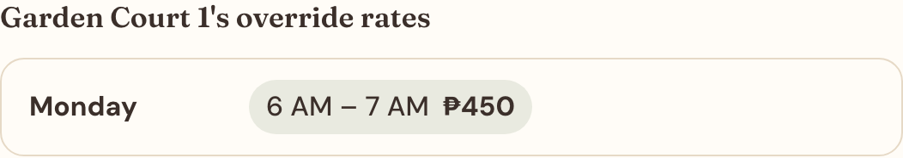
Hours and prices share one draft. Switch between the tabs to check either. Choose Review & save in the bottom bar to see the changes together.
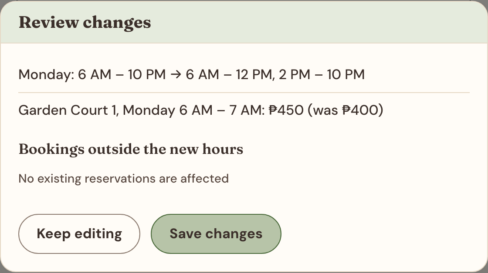
Check Bookings outside the new hours. The preview looks ahead 90 days. Follow up with affected players yourself. Existing reservations keep their time and price.
Choose Save changes. To abandon the whole draft, choose Discard in the bar and confirm.
Use Schedule → Closures for a one-off holiday, repair or private event. The weekly timetable is separate.
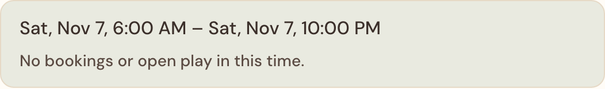
Open Settings → Payment Setup. Complete both sections before returning to the Dashboard checklist.
Under Add an account, enter a label players know, the account name and the receiving number. Add a QR image if you use one. Select Add account and check the saved entry. Use Edit to correct it later.
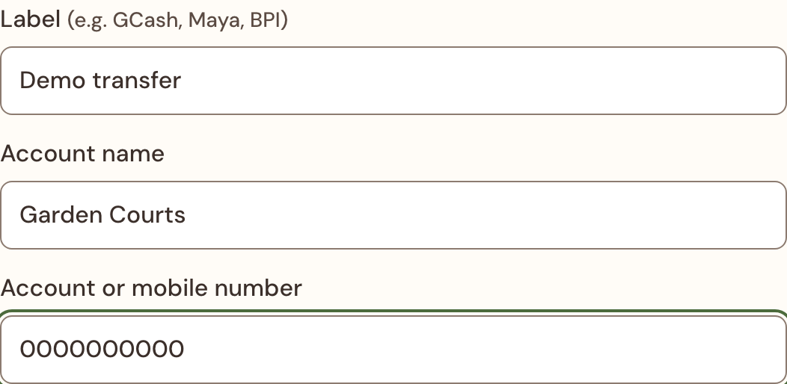
In Payment instructions, tell players where to pay, what reference to include and how to upload proof. Use example fills the box so you can edit it. Select Save instructions and wait for confirmation.
Open Settings → Venue Profile. Set the venue name and select Save venue profile. Check the displayed timezone, currency and slot length. In the location section, enter the street address and paste your Google Maps link. Save the section and test the address link on the public page.
Add the city and any public contact or social links in their own sections. Publishing your booking site and appearing in Plotline’s venue showcase are separate steps. Contact Plotline about a showcase listing.
Choose a color preset and save it. Add your banner image, select the amenities you offer and add information players need before arrival. Set the sport order if you offer several sports. Save each section you change. Use View public site to inspect the result.
Enter the waiver players must accept during online booking, then select Save waiver. Reset to default fills the editor with the default wording. Review it before saving. A blank saved waiver turns the requirement off.
Go to Settings → Booking Rules. Enter whole numbers in the units beside each field, then choose Save booking rules.
How far ahead an online player can reserve. A value of 30 allows bookings today and up to 30 days ahead.
How long the player has to upload proof. If the hold expires first, the booking expires and the slot opens again.
How far before play a player must cancel online. With 24, the player needs to contact you inside the last 24 hours. With 0, they can cancel right up to the start.
Below this limit, a rejected proof gives the player a fresh payment hold to try again. At the limit, the booking is rejected and the time becomes available. With 1, the first rejection releases the slot.
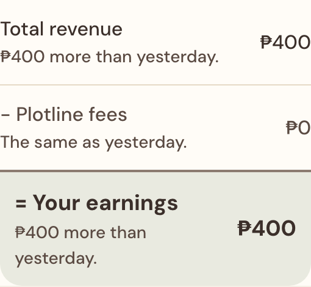
Use Booked hours to compare booked and available time. For several days, check the collected-per-day chart. Under Export, choose the bookings or payments CSV for the selected range. Include contact details only when the file needs them.
Open Bookings. The default Needs review filter shows submitted proofs. Select a row to open the details. On a phone, these appear below the list.
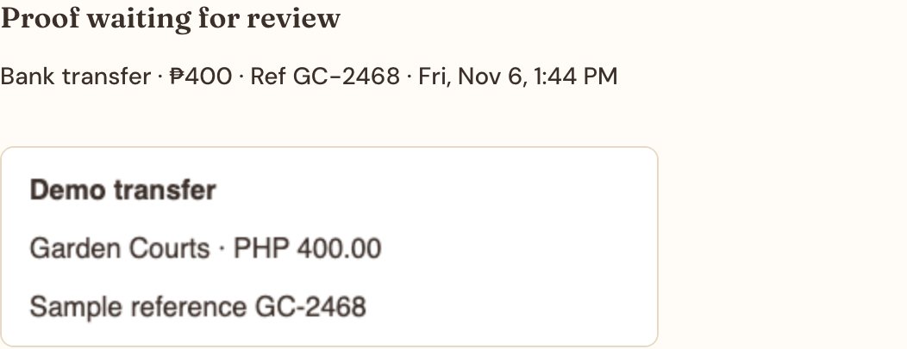
An accepted online payment can confirm automatically. If you see Refund due or Check duplicate, reconcile the payment and arrange any refund outside the app.
In Bookings, search by booking reference, customer name or email, then select Search. A full reference opens its booking. Search covers all bookings. Use Clear search to return to status, source and date filters.
Open the active booking before it ends. Under Cancel booking, enter a reason, then select Cancel booking. The player sees the reason and the released time becomes bookable. Cancel any moved parts separately if needed.
Use Open Play to reserve one or more courts for a shared activity. Players can see the session and its details on the booking page.
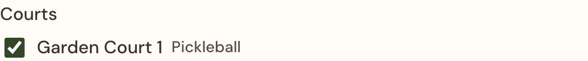
For a future session, choose Edit, update the form and select Save changes. To remove a session, choose Delete and confirm. Check the booking grid afterward. Opening hours, closures and other reservations still apply.
Open Reports to see the venue’s Statement. The player pays the booking fee on top of the court price for a confirmed online booking. Walk-ins carry no booking fee.
Amount due totals issued, unpaid invoices. Check each due date and any Overdue label. Use the payment instructions from Plotline for that invoice. Contact support with the venue name and billing month if a payment is missing.
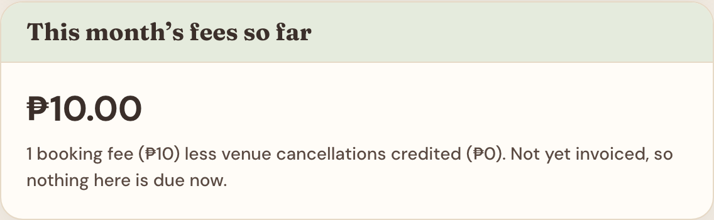
This month’s fees so far is a running total for the current month. It becomes payable when invoiced. A venue cancellation of a fee-bearing confirmed booking generates a credit.
Select the Month to see its full totals and payment-method breakdown. In Charges, search a booking reference and follow it to the booking. Use the page controls for more rows. Under Invoice history, choose Details for fees, credits and total. Paid entries show the recorded payment details.
Check the venue name and invited email. If you already set a password, try the regular admin sign-in. Otherwise ask Plotline for a fresh access link. Share the venue name and what you see. Keep passwords and private links to yourself.
Return to the draft Dashboard and follow each Fix. Check every active court’s base rate, a bookable day, an account number and saved payment instructions. Photos are optional.
Check the court is active, its weekly hours, breaks, individual hours, override price, closures and open play. Review and save the draft, then check the same date on the public booking page. If the schedule is unavailable for your venue, ask Plotline to check it. For a conflicting staff edit, note your intended changes, choose Reload latest, then reapply them.
Include your venue, the screen you were on, any booking reference and the exact message. To arrange a call, tell us when you are available and your timezone.
plotline.admin1@gmail.com
Plotline on Facebook · Message Plotline on Messenger